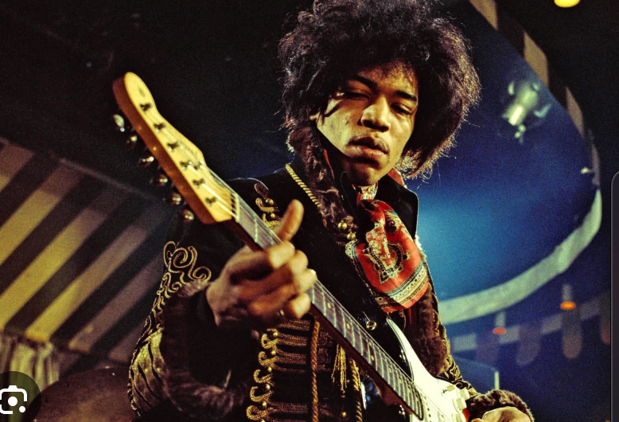
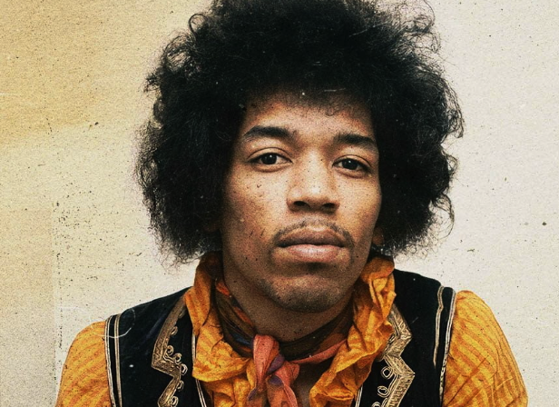

Home
Videos
Biography
Jimi Hendrix grew up in Seattle, Washington. From an early age he expressed interest in guitar. As a young boy he carried a stick around with him which he pretended was a guitar. One of his teacher's tried to get resources to buy Jimi a guitar worrying that the denial of such an outlet would result in psychiological damage. Though the guitar was never granted Jimi was able to find an old ukele and started working from there.

Jimi Hendrix's career began to take off in the mid-1960s, after he moved to London in search of greater opportunities. He quickly gained recognition for his extraordinary guitar skills and innovative sound, blending blues, rock, and psychedelia in ways that had never been heard before. His performance at the Monterey Pop Festival in 1967 catapulted him to stardom, famously culminating in the burning of his guitar. As the frontman of the Jimi Hendrix Experience, he released seminal albums such as "Are You Experienced" and "Axis: Bold as Love," which featured hit songs like "Purple Haze" and "Hey Joe." Hendrix’s dynamic stage presence and flamboyant style set him apart, making him a countercultural icon of the era.

After a string of successful performances and groundbreaking albums, he passed away in September 1970 at just 27 years old. His final album, "Cry of Love," was released posthumously, showcasing his continued evolution as an artist. Hendrix's legacy endures through his innovative guitar techniques, his influence on rock music, and his ability to push artistic boundaries. Today, he is celebrated as one of the greatest guitarists in history, inspiring generations of musicians and cementing his place in the pantheon of rock legends.
